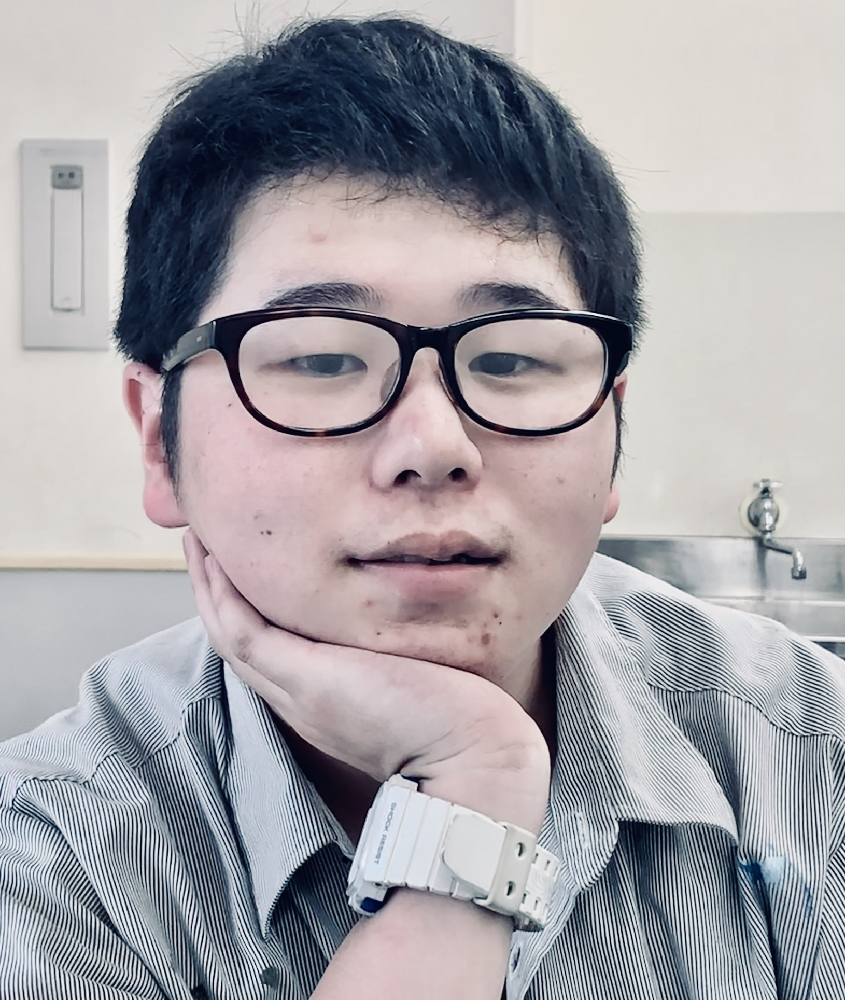

About

林 竜聖 Hayashi Ryusei
生年月日／2001年03月14日
2001年 愛知県生まれ。
趣味はスニーカー収集
中学生時にデザインに興味を持ち、高校時からデザイン分野専門の勉強を続けてきました。
専門学校では、背伸びをしすぎず落ち着いたデザインを心がけ、だれが見ても理解できるようデザインに気を付けております。
そして、いい表現が身につくよう日々資料を集めるなどして学生生活を送っています。